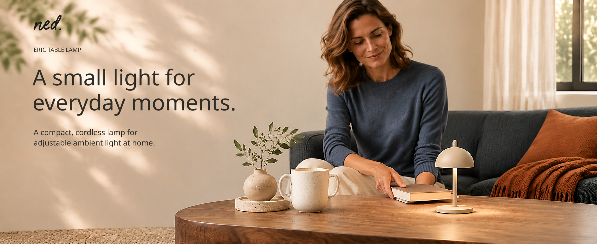
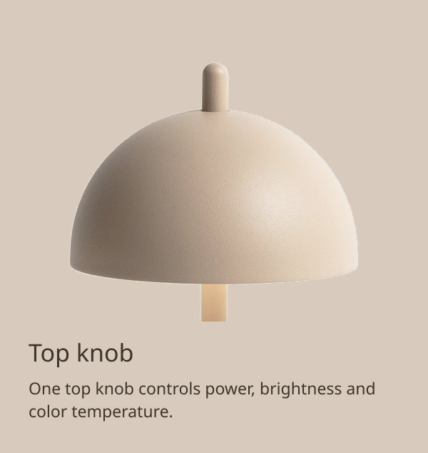
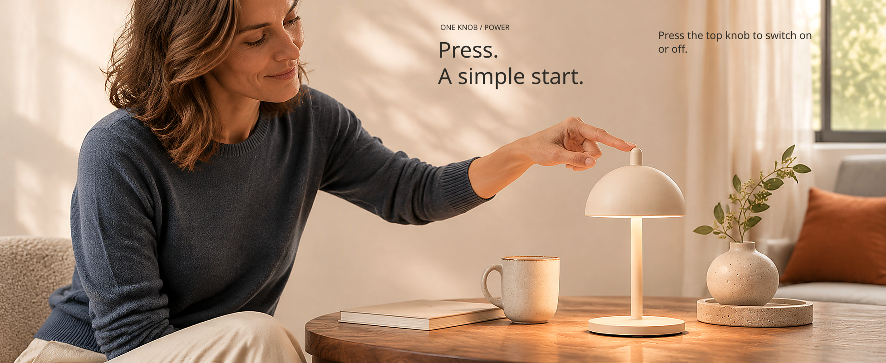
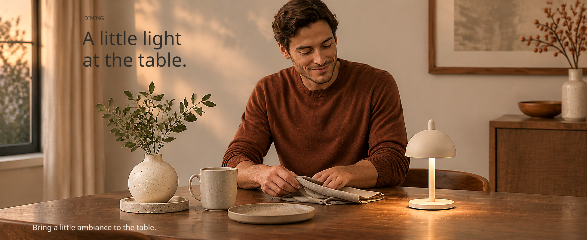
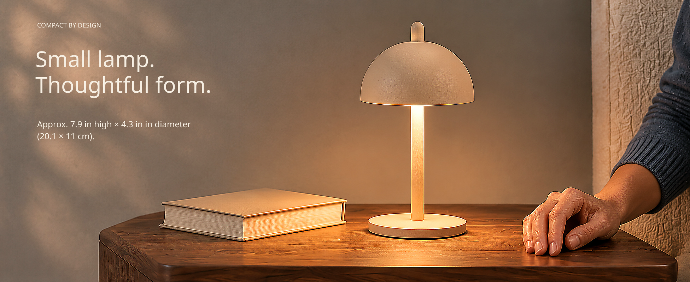

One top knob controls power, brightness and color temperature.



Press the knob for power, turn to dim, and press and turn to change color temperature.
Up to 8 hours on a full charge, depending on brightness. NED lists a charging time of approximately 6 hours.
NED lists an IP65 rating and recommends bringing the lamp indoors after outdoor use.